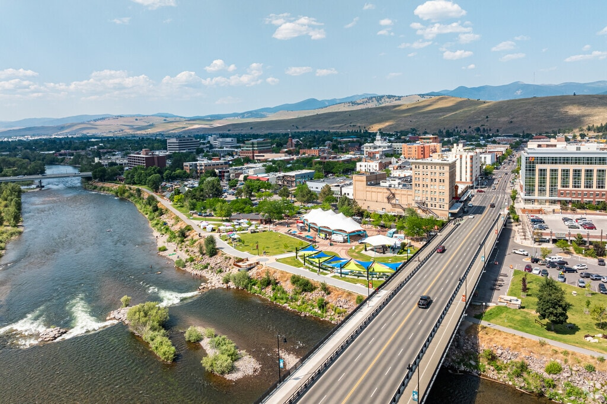

Missoula Art Museum
Explore contemporary art in a downtown museum with free admission.
- Location
- 335 Pattee Street
- Cost
- Free admission

Component workspace
Art, games, a little history, or a walk by the river. Find local activities that fit your interests and check the details before you go.
Explore activitiesThree different ways to spend an afternoon.
Explore contemporary art in a downtown museum with free admission.
Take a walk beside the Clark Fork and explore the parks connected by the riverfront paths.
Learn about local history through museum exhibits and the historic grounds.